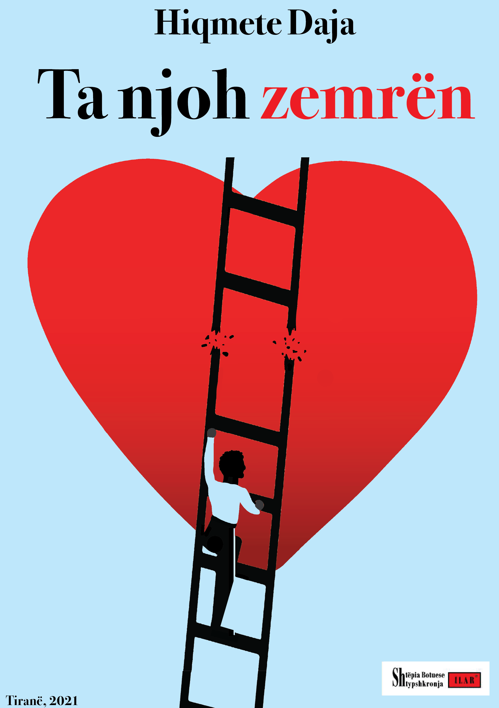
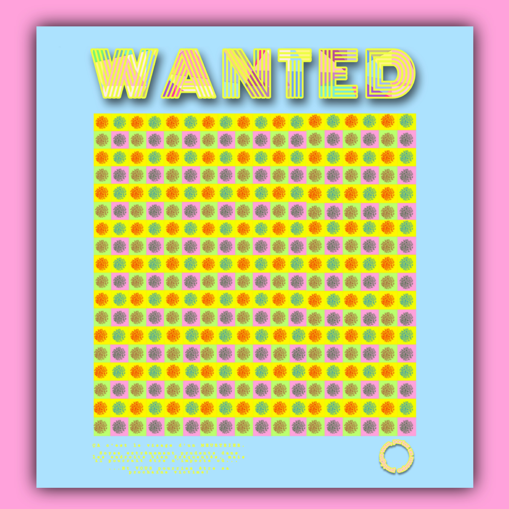
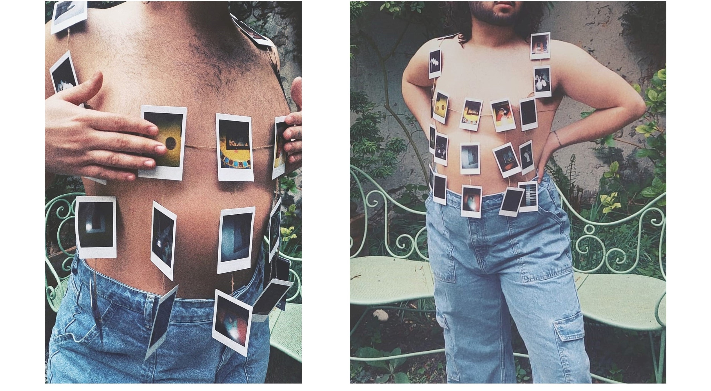

AS Portofolio
Photo Project
ANIS SLIMANI Portofolio: Collection of personal, academic and paid work

Chiaroschuro: Photography project consisting of raw digital photos with a centralized thematic on manipulating lighting and movement using aperature and shutter speed. Camera used: Panasonic DC-GX880.

A series of freelance visual design projects done for personal and paid work. Adobe competences are used for all designs seen in this portofolio, for this duo of book covers the Adobe Illustrator software was used specificially. The first design is a conceptualized children's book cover with a focus on typography, while the second cover was commissioned work for the book "Ta njoh Zemren", by author Hiqmete Daja.
Freelance Designs

- 
Using design for the health industry
MASKS ARE SEXY: Design project focused on the propaganda image through the lense of an art movement (pop art). The intent of the project is to show how design can be very useful in the field of health in the scope of the global COVID-19 pandemic to raise awareness and promote safety measures.

- 

Media in The Age of Fashion
MOCK UP: Pre-graduate project on how visual editing software can used in clothing design and the Fashion Industry. Photoshop used in first design to create the image overlay, while Illustrator was used to create this concept merch for a company logo.

PENSER PAR SOI-MÊME: A portable photo exhibition based on the questionnaire by Marcel Proust. Taking inspiration from modern fashion refrences, this project is meant to show the long connection between photography and fashion.
- 
Video Projects/Videos of projects
Continuation of the project under the theme of Pop Art Propaganda in the lense of the global pandemic. Inspired by fallout shelter propaganda during the Cold War in the context of wearing a mask. The making of this video shows the compentences used in adobe software such as After Effects and Premiere Pro.
CASSANDRA the Talking Robot: Sound sensors connected with a circuit board and coded with MAX MSP to make a motor move, and sound play for built in speaker. Meant to show the limits of the software when it comes to project realization, while providing a interactive exterior with the user.
RICCARDO the Running Robot: A continuation and evoloution of Cassandra, Riccardo's older sister. This autonomous robot is controlled by a proximity sensor which sends the signals that it recieves to MAX MSP through the 'Interface Z'-exclusive electronic board "The ZIP E-Card". The project's purpose is to comment on the fear of human-computer interactions and the phenomenon of "Tech-Panic", reversing the roles and showcasing the fear of the artificial intelligent subject from the human.
KANUN, Controlling Communities: A documentary which delves deep into the 500 year old history of the Albanian Kanun of Lek Dukagjin, an outdated violent and inhumane moral code which is still followed today by certain communities in rural Albania. Utilizing audiovisual software in the field of research. Adobe interfaces Premiere Pro and Audition used to edit footage and audio.
MOM'S CLUB: a research-oriented desktop documentary that focuses on FACEBOOK and tackles the internet trends that decide relevance while pointing out the ageist, occidental and imperialistic standards that decide these trending topics. Competences in Adobe softwares such as Premiere Pro, Audition and AfterEffects.